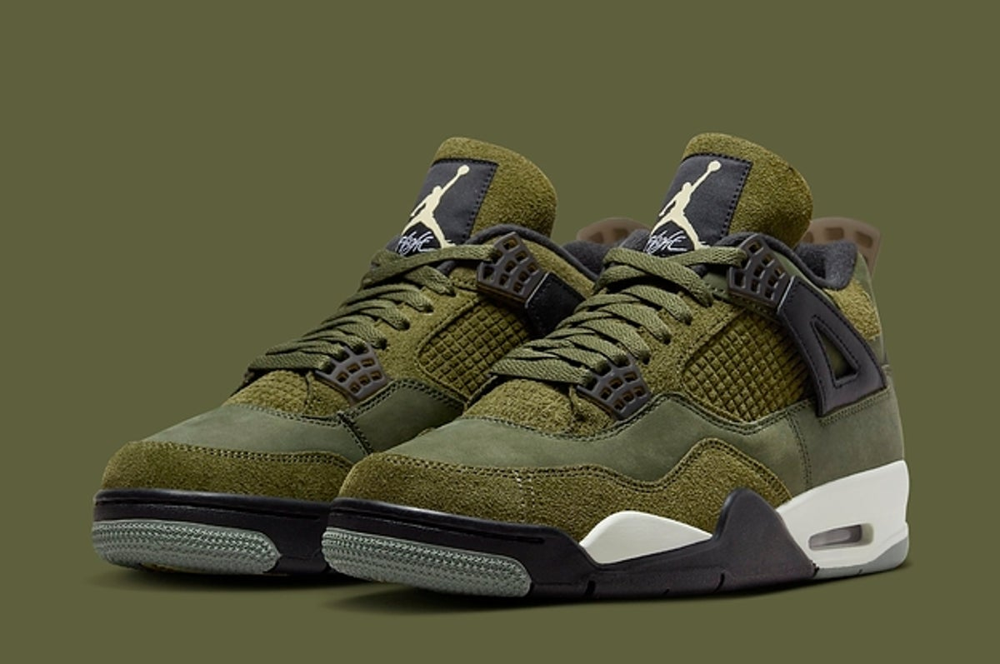
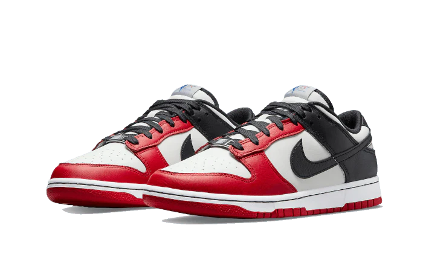
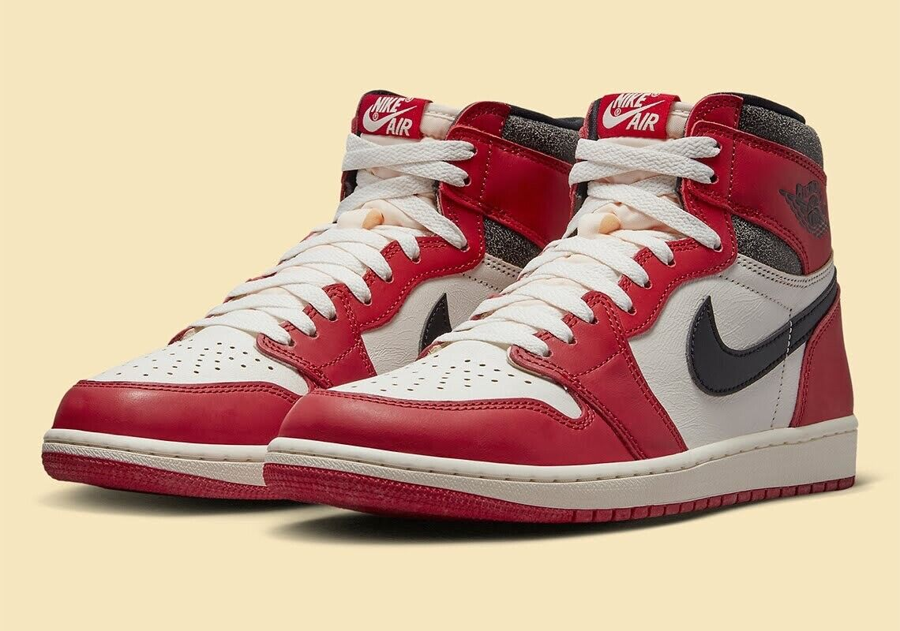

Air Jordan 4 Retro Olive Green
These shoes are some clean 4s, they drop 11/18/2023 and I going to be getting them as a birthday gift for myself. If you remember Patricia my car, they are the same color so getting these will not only allow me to finally have some green shoes, but to have something match with my car which I think will be super awesome!!

Dunk Split Chicago
These shoes were released earlier this year in July and as expected sold us fast!! Chicago has always been my favorite basketball team and overall the colors of the the team as well. With red being my favorite color, and dunks being so light and ease to slip on. These are some most own shoes for me!!!

Air Jordan 1s Lost and Found
The air jordans, MJs first Jordan shoes he wore on the floor and the rest is history. The ones have so many colorways that are sick!! These are probably one of my favorite hight top 1s and I really hope to get once they restock
